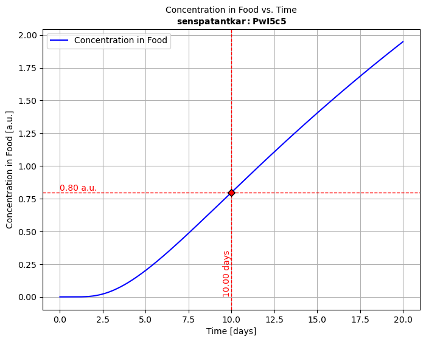
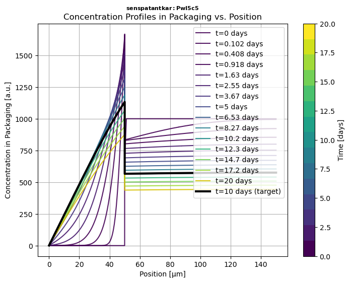
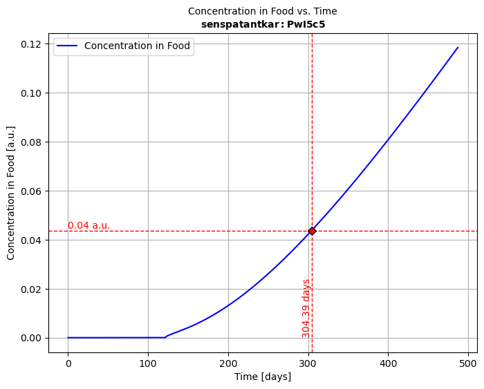

Table of Contents
SFPPy - Python Framework for Food Contact Compliance and Risk Assessment 🍏⏩🍎🛠️ Overview📁 Main Modules (Located in patankar/)Why Patankar?🚀 | 1 | QUICK START💡 | 2 | USAGE SNIPPETS| 2.1 | Snippet 1️⃣ | Simple Migration Simulation| 2.2 | Snippet 2️⃣ | Retrieving Molecular Properties and Toxicological Data| 2.3 | Snippet 3️⃣ | Defining a Custom Packaging Shape| 2.4 | Snippet 4️⃣ | Using ⏩ as Mass Transfer Operator in Chained Simulations🧩 How It Works| 2.5 | Snippet 5️⃣ | Parameter linking 🔗 via layerLink📖 | 3 | CASE STUDIES| 3.1 | Example 1: | Mass Transfer from ♶ Monolayer Materials| 3.2 | Example 2 | Mass Transfer in ♻️ Recycled PP Bottles| 3.3 | Example 3 | Advanced Migration Simulation ⛓️ with Variants| 3.4 | Example 4 | Parameter Fitting and Optimization ⚙️🌟 | 3 | Why SFPPy?
SFPPy is a Python-based framework for compliance testing of food contact materials and recycled plastic safety assessment under:
🇪🇺 European Union regulations (EFSA, EU 10/2011, etc.)
🇨🇳 Chinese GB standards
🌍 Other international guidelines. For example, for materials in contact with 💄💅cosmetics and 🧴 home care products read CosPaTox guidelines.
This project translates well-established chemical migration models from MATLAB/Octave and other languages to pure Python🐍, ensuring minimal dependencies.
💡 If you need background or training, please refer to 📕 this book on
migration modelingor the European training platform 👨🏼💻 FitNESS.✨Note that can also fit your own experimental 🧫⏲🌡
migration kineticswith SFPPy (seeexample 4) and explore new strategies to identify ⚗️ partition coefficients and 🎲 diffusivities from ⚛molecular structures.
patankar/)| module | description |
|---|---|
migration.py 🏗️ | Core solver using a Patankar finite-volume method for mass transfer modeling. |
geometry.py 📐 | Defines 3D packaging geometries and calculates volume/surface area. |
food.py 🍎 | Models food layers and their interactions with packaging. |
layer.py 📜 | Defines materials and layers for multilayer packaging. |
property.py 📊 | Computes physical and chemical properties (e.g., diffusion, partitioning). |
loadpubchem.py 🔬 | Retrieves molecular properties from PubChem and ToxTree (cached locally). |
ⓘ The
patankarfolder is named in honor of 👨🏻💼Suhas V. Patankar, who developed and popularized the 🔢 finite volume method, which this project adapts for mass transfer problems with an arbitrary number of જ⁀➴ Rankine discontinuities.🔧 The modules include a 🧠
knowledge management systemvia extensible 🐍Python classes, allowing easy expansion to cover additional cases and implement new 🔮prediction methods and models. I recommend this reading if you plan to ⌨ modifySFFPyfor your own needs.
xxxxxxxxxx# Clone the repositorygit clone https://github.com/ovitrac/SFPPy.gitcd SFPPy
# Install dependenciespip install -r requirements.txt🔧 SFPPy is built on a minimum number of packages 📦📦, which are all standard. Customized libraries are included in 📁patankar/private/ and do not require specific installation.
ⓘ
SFPPyis fully object-oriented and supports multiple syntax styles, ranging from a functional approach to a more abstract, operator-driven paradigm—all in a 🐍 Pythonic manner. The snippets below demonstrate both approaches.
xxxxxxxxxxfrom patankar.food import ethanol # food databasefrom patankar.layer import layer # material database
# Define the food contact medium and layerssimulant = ethanol() # here a food simulantA = layer(layername="layer 1 (contact)", D=1e-15, l=50e-6, C0=0, k=1) # SI unitsB = layer(layername="layer 2", D=(1e-9, "cm**2/s"), l=(100, "um"),k=2)multilayer = A + B # layer A is contact (food is on the left)
# Run solver, plot the migration kinetics CF(t) and concentration profiles in P Cx(x,t)solution = simulant.migration(multilayer)hCF = solution.plotCF() # concentration kinetic in the simulant (F) for default timeshCx = solution.plotCx() # concentration profile in the multilayer packaging# Print in PDF and PNG, export to ExcelhCF.print("myresult")solution.comparison.save_as_csv("myresult.csv") # CSV formatsolution.comparison.save_as_excel("myresult.xlsx") # Excel format📝 Notations:


xxxxxxxxxxfrom patankar.loadpubchem import migrant # connect to pubchem for missing substancesfrom patankar.food import oliveoil,water # food simulants from patankar.layer import gPET # "glassy" PET (i.e., T<Tg)m = migrant("bisphenol A") # bisphenol A = BPA# Print basic propertiesprint(m.M, m.logP, m.polarityindex) # Molecular weight, logP value, polarity Index P'print(m.smiles) # CC(C)(C1=CC=C(C=C1)O)C2=CC=C(C=C2)O
# Add BPA to material (P) and food simulants (F1,F2) to calculate binary propertiesF1 = oliveoil(migrant=m) # F1 = food simulant oliver oil with BPAF2 = water(migrant=m) # F2 = water with BPAP = gPET(migrant=m) # P = PET with BPAKFP1 = P.k / F1.k # F-to-P1 partition coefficient, k= Henry-like coefficientsKFP2 = P.k / F2.k # F-to-P2 partition coefficient, k= Henry-like coefficients# Print partition coefficients, with k values calculated from Flory-Huggins theoryprint(KFP1,KFP2) # [0.93498524] [0.00093499]💡 The examples show how to inject m into food (various classes ) and layer (various classes) to get customized and conservative simulations for specific substances and polymers. All properties, diffusivities
Add toxicological data from Toxtree
xxxxxxxxxxfrom patankar.loadpubchem import migrantToxtree # combine PubChem and ToxTreesubstance = migrantToxtree("formaldehyde")output
xxxxxxxxxx<migrantToxtree object> Compound: formaldehyde Name: formaldehyde cid: 712 CAS: ['50-00-0', '8013-13 [...] 80-5', '30525-89-4'] M (min): 30.026 M_array: [30.026] formula: CH2O smiles: C=O logP: [1.2] P' (calc): [3.91591487] Toxicology: Low (Class I) TTC: 1.5 [µg/kg bw/day] CF TTC: 0.09 [mg/kg food intake] alert 1: Alert For Schiff Bas [...] Formation IdentifiedOut: <migrantToxtree: Oplossin [...] [Dutch] - M=30.026 g/mol>💡 A local installation of Toxtree (java) is included with SFPPy
For the European FCM and Articles Regulation, Annex I - Authorised Substances, use the ECHA webpage
xxxxxxxxxxfrom patankar.geometry import Packaging3D # import basic shapespkg = Packaging3D('bottle', # bottle is a composite shape body_radius=(5, 'cm'), body_height=(0.2, 'm'), neck_radius=(19, "mm"), neck_height=(40, "mm"))vol, area = pkg.get_volume_and_area() # extract volume and surface areaprint("Volume (m³):", vol)print("Surface Area (m²):", area)💡 The examples show how to use either pkg or its properties to achieve mass transfer simulation for a specific geometry.
⚠️ Note: To efficiently simulate the migration of substances from packaging materials, SFPPy unfolds complex 3D packaging geometries into an equivalent 1D representation. This transformation assumes that substance desorption is predominantly governed by diffusion within the walls of the packaging.
🔍 The geometry.py module provides tools to compute surface-area-to-volume ratios, extract wall thicknesses, and generate equivalent 1D models for mass transfer simulations.
📌 SFPPy leverages multiple inheritance to define food contact conditions by combining storage conditions, food types, and physical properties.
📌 Additionally, two operators play a key role in SFPPy’s intuitive syntax:
➕ for combining layers and merging results
⏩ for naturally representing mass transfer
With these operators, mass transfer can be abstracted into a simple, visual representation:
🍏⏩🍎
(Direct transfer from green to red, symbolizing migration.)
🍏⏩🟠⏩🍎
(Includes an intermediate step, depicting progressive migration.)
🍏⏩🟡⏩🟠⏩🍎
(More detailed, illustrating multiple contamination stages over time.)
🍏⚡⏩🍎
(Emphasizes active food transformation, with accelerated mass transfer.)
🌟 SFPPy makes this abstraction possible with simple, expressive code.
xxxxxxxxxxfrom patankar.layer import gPET, PPfrom patankar.food import ambient, hotfilled, realfood, fat, liquid, stackedfrom patankar.loadpubchem import migrant
# Define migrant and packaging layers (ABA: PET-PP-PET)m = migrant("limonene")A = gPET(l=(20, "um"), migrant=m, C0=0)B = PP(l=(500, "um"), migrant=m, C0=200) ABA = A + B + A # the most left layer is contact (food on the left)
# Define storage and processing conditions:# 1:storage in stacks >> 2:hot-filled container >> 3:long-term storage of packaged foodclass contact1(stacked, ambient): name = "1:setoff"; contacttime = (4, "months")class contact2(hotfilled, realfood, liquid, fat): name = "2:hotfilling"class contact3(ambient, realfood, liquid, fat): name = "3:storage"; contacttime = (6, "months")
# Instantiate and simulate with ⏩medium1, medium2, medium3 = contact1(), contact2(), contact3()medium1 >> ABA >> medium1 >> medium2 >> medium3 # Automatic chaining
# Merge all kinetics into a single one and plot the migration kineticssol123 = medium1.lastsimulation + medium2.lastsimulation + medium3.lastsimulationsol123.plotCF()

Each contact class inherits attributes from multiple base classes, allowing flexible combinations of:
📌 Storage Conditions:
ambient: Defines standard storage at room temperature
hotfilled: Represents high-temperature filling processes
stacked: Models setoff migration when packaging layers are stacked
🥘 Food Types & Interactions:
realfood: Represents actual food matrices
liquid: Specifies that the food is a liquid
fat: Indicates a fatty food, influencing partitioning behavior
🔬 By combining these components, SFPPy allows streamlined, physics-based simulations with minimal code. 🚀
layerLinkxxxxxxxxxx# Any numeric property can be attached to a simulation with layerLinkfrom patankar.layer import layerLink# Attach a variable function barrier thickness to ABAfb_thickness = layerLink("l",indices=0) # index 0 = layer 1 (A) in contact with F# Reuse ABA from Snippet 3 [...]ABA.llink = fb_thicknesses# Change dynamically the simulation by changing fb_thicknesses[0]fb_thicknesses[0] = 12e-6 # 12 µmmedium1.lastsimulation.rerun()# [...]💡 Dynamic parameter binding using layerLink connections allows:
✅ Dynamic updates of [i] refers to the layer i+1).
✅ Seamless integration of simulation and optimization tasks.
✅ Robust handling of parameter uncertainties in complex simulation scenarios.
The project includes four detailed examples (example1.py, example2.py, example3.py, and **example4.py**), showcasing real-world scenarios with various materials, substances, food types, geometries, and usage conditions.
🥪 Simulates the migration of Irganox 1076 and Irgafos 168 from a 100 µm LDPEfilm into a fatty sandwich 🥖over 10 days at 7°C.
📈 Evaluates migration kinetics and their implications for food safety.
🍼 Investigates toluenekbd< migration from a 300 µm thick recycled PP bottle into a fatty liquid food.
🛡️ Assesses the effect of a PET functional barrier (FB) of varying thickness on reducing migration.
📦 Simulates migration in a trilayer (ABA) multilayer system, with PET (A) and recycled PP (B).
🔥 Evaluates migration behavior across storage with set-off, hot-filling, and long-term storage conditions.
⚙️ Explores variants where the migrant and layer thickness are modified to assess performance.
🍏⏩🍎 Example 3 showcases the mass transfer operator ⏩.
✅ Fit diffusivities (
✅ Utilize dynamic parameter linking 🔗🧲 with layerLink.
✅ Integrate simulation results directly with experiments for sensitivity analysis and optimization
⚠️ Disclaimer: These examples do not discuss sources of uncertainty. Please refer to our publications for details on the limitations of the presented approaches and assumptions.
✔ SFPPy: is free and opensource.
✔ SFPPy: accepts any unit as (value,"unit") or ([value1,value2...],"unit").
✔ Operator-based chaining: >> handles automatic mass transfer and property propagation
✔ Minimal code for complex simulations: + joins layers and merges results across storage conditions
✔ Pythonic abstraction: Works with PubChem, ToxTree, predefined polymer materials, and 3D packaging geometries
✔ Built-in visualization & export: Supports Excel (.xlsx), CSV, PDF, PNG and Matlab (if its really needed)
🔬 SFPPy powers scalable, real-world safe food packaging simulations.
For further details, consult the online documentation and the release page for new capabilities.
🍽️🍽️🍽️🍽️🍽️🍽️🍽️🍽️🍽️🍽️🍽️🍽️🍽️🍽️🍽️🍽️🍽️🍽️🍽️🍽️🍽️🍽️🍽️🍽️🍽️🍽️🍽️🍽️🍽️🍽️🍽️
🍽️🍽️🍎🍎🍎🍎🍽️🍎🍎🍎🍎🍎🍽️🍏🍏🍏🍏🍽️🍽️🍎🍎🍎🍎🍽️🍽️🍽️🍽️🍽️🍽️🍽️🍽️
🍽️🍎🍽️🍽️🍽️🍽️🍽️🍎🍽️🍽️🍽️🍽️🍽️🍏🍽️🍽️🍽️🍏🍽️🍎🍽️🍽️🍽️🍎🍽️🐍🍽️🍽️🍽️🐍🍽️
🍽️🍽️🍎🍎🍎🍽️🍽️🍎🍎🍎🍎🍽️🍽️🍏🍏🍏🍏🍽️🍽️🍎🍎🍎🍎🍽️🍽️🍽️🐍🍽️🐍🍽️🍽️
🍽️🍽️🍽️🍽️🍽️🍎🍽️🍎🍽️🍽️🍽️🍽️🍽️🍏🍽️🍽️🍽️🍽️🍽️🍎🍽️🍽️🍽️🍽️🍽️🍽️🍽️🐍🍽️🍽️🍽️
🍽️🍎🍎🍎🍎🍽️🍽️🍎🍽️🍽️🍽️🍽️🍽️🍏🍽️🍽️🍽️🍽️🍽️🍎🍽️🍽️🍽️🍽️🍽️🍽️🍽️🐍🍽️🍽️🍽️
🍽️🍽️🍽️🍽️🍽️🍽️🍽️🍽️🍽️🍽️🍽️🍽️🍽️🍽️🍽️🍽️🍽️🍽️🍽️🍽️🍽️🍽️🍽️🍽️🍽️🍽️🍽️🍽️🍽️🍽️🍽️
Enlarge your window if you cannot read the logo. The snake is the totem for Python